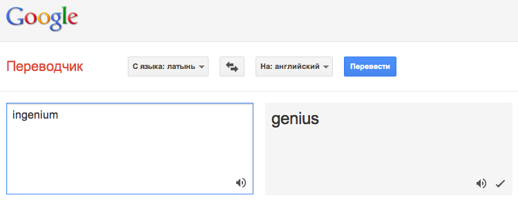
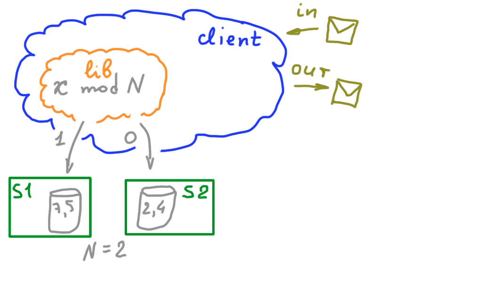
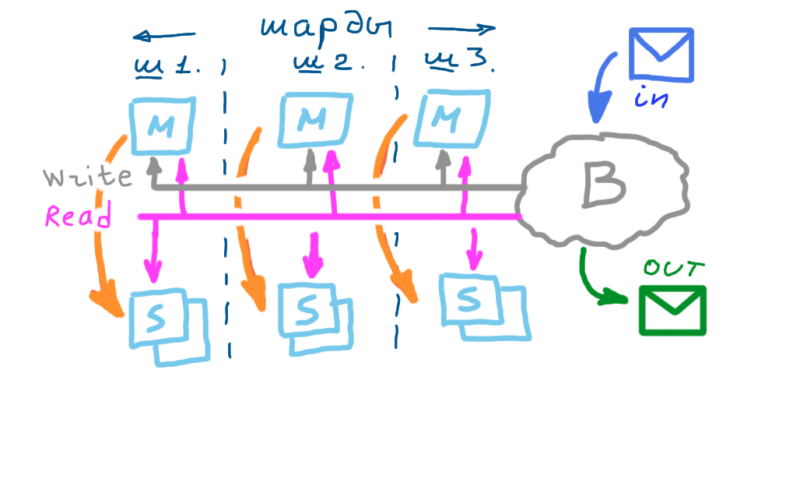
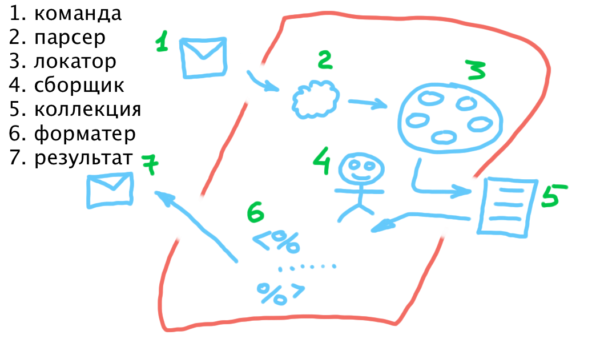

Базы данных: введение, часть вторая
Илья Тетерин
2011-09-21
(use arrow keys or PgUp/PgDown to move slides)
Илья Тетерин
2011-09-21
(use arrow keys or PgUp/PgDown to move slides)
Инженер (фр. ingénieur, от лат. ingenium — способность, изобретательность) ...

wikipedia:«O» большое и «o» малое wikipedia:Big_O_notation
Пусть наш компьютер делает 1000 операций в секунду...
| O | 1 тыс. | 1 млн. |
|---|---|---|
| o(n) | 1 сек.. | 1000 сек. = 16 мин. |
| o(ln(n)) | 0.006 сек | 0.013 сек |
| o(n^2) | 16 мин. | 31 год |
| o(n ln(n)) | 7 сек. | 3.8 часа |
| o(k * n) | 9 * 1 | 9 * 1 * 1000 |
| Буквы | Число |
|---|---|
| АБВГД | 7 |
| ЕЁЖЗ | 2 |
| ИКЛМ | 11 |
| НОПР | 3 |
| СТУФ | 5 |
| ХЦЧШЩЪЫЬЭЮЯ | 2 |
| всего | 30 |
Hash Functions FTW - слайды + ссылки на hash file storage
Memcached is an in-memory key-value store for small chunks of arbitrary data (strings, objects) from results of database calls, API calls, or page rendering.
Memcached was originally developed by Brad Fitzpatrick for LiveJournal in 2003.
Contributed: 80+ человек

http://redis.io/ / wikipedia:Redis / yandex:Redis
http://redis.io/commands - 124 разных комманды ( o_O )

Слайды by Brad Fitzpatrick / Aug 2005
... college hobby project, Apr 1999 ...
Scale up vs Scale out...
Интерактивность только с первым - я получил updated версию :) в ночь на среду

http://voituk.kiev.ua/2008/12/22/simple-reliable-java-http-server/
import java.io.IOException;
import java.io.PrintWriter;
import java.net.InetSocketAddress;
import com.sun.net.httpserver.HttpExchange;
import com.sun.net.httpserver.HttpHandler;
import com.sun.net.httpserver.HttpServer;
public class HttpServerEx implements HttpHandler {
public static void main(String[] args) throws IOException {
HttpServer server = HttpServer.create(new InetSocketAddress(80), 10);
server.createContext("/", new HttpServerEx());
server.start();
System.out.println("Server started\nPress any key to stop...");
System.in.read();
server.stop(0);
System.out.println("Server stoped");
}
public void handle(HttpExchange exc) throws IOException {
exc.sendResponseHeaders(200, 0);
PrintWriter out = new PrintWriter(exc.getResponseBody());
out.println( "Hello moto!" );
out.close();
exc.close();
}
}http://json.org/ / wikipedia:JSON / yandex:JSON
{"person": {
"id": "75685",
"fio": "Илья Тетерин",
"контакты": {
"twitter": "ya_pulser",
"url": "http://fluffypulser.ru",
"email": "ya.pulser@gmail.com"
}
}
}Мало данных?
Some Datasets Available on the Web - 398 больших наборов данных